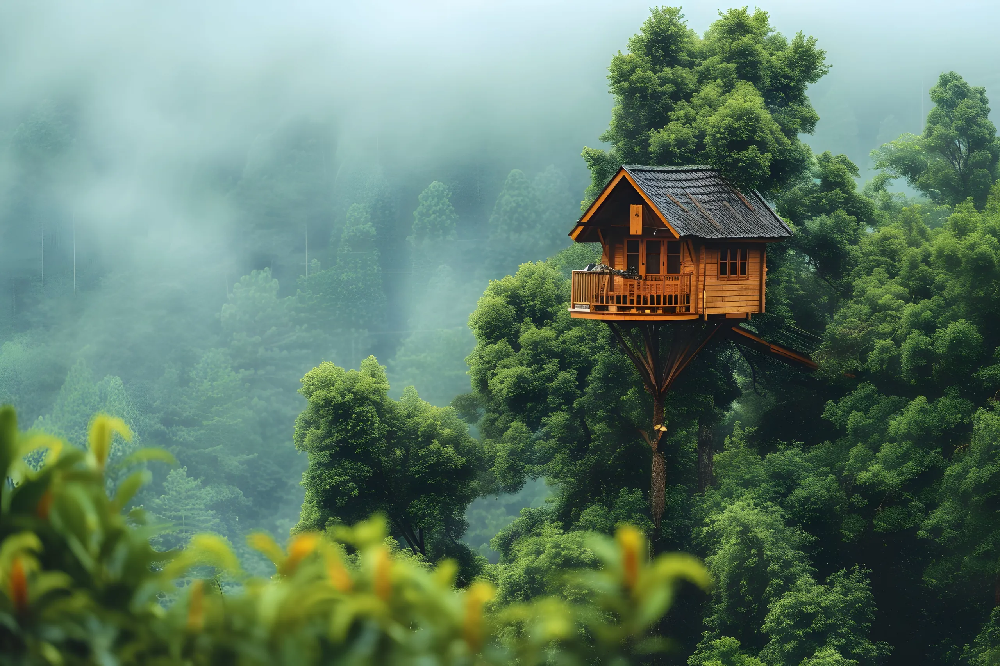
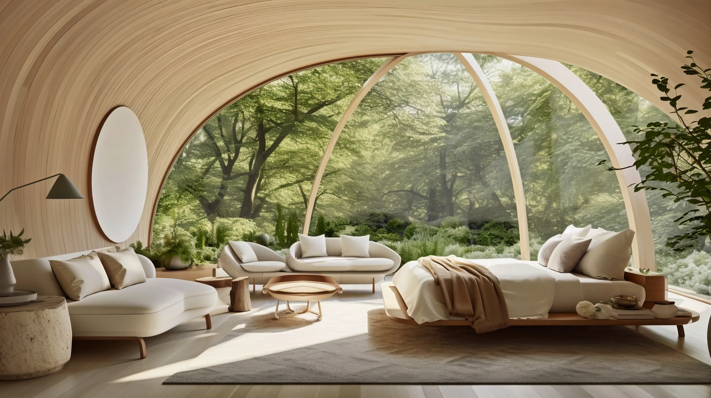
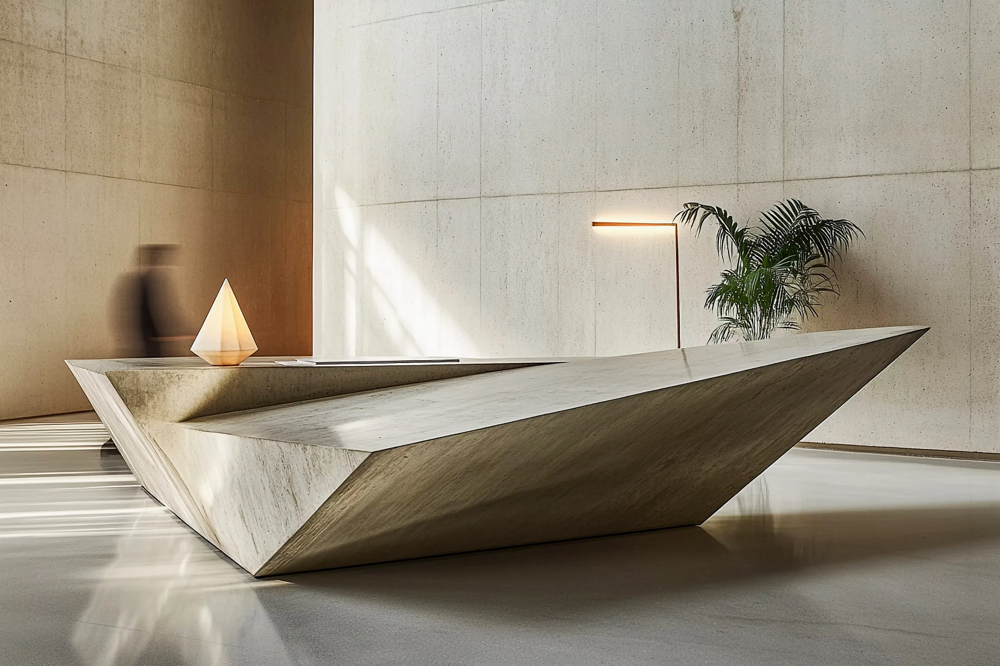
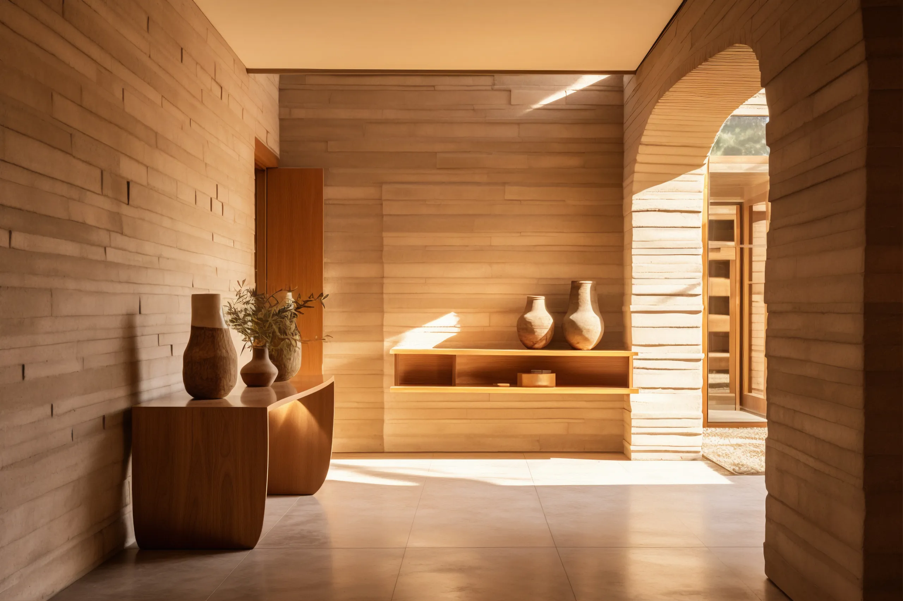
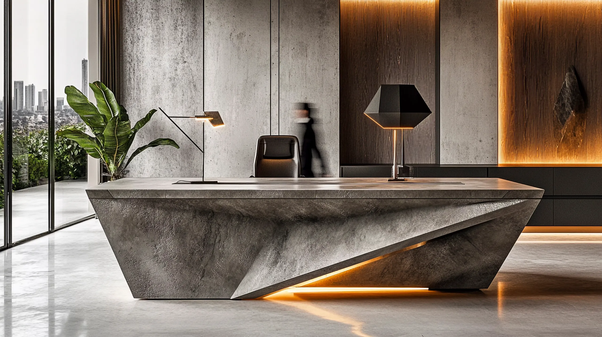
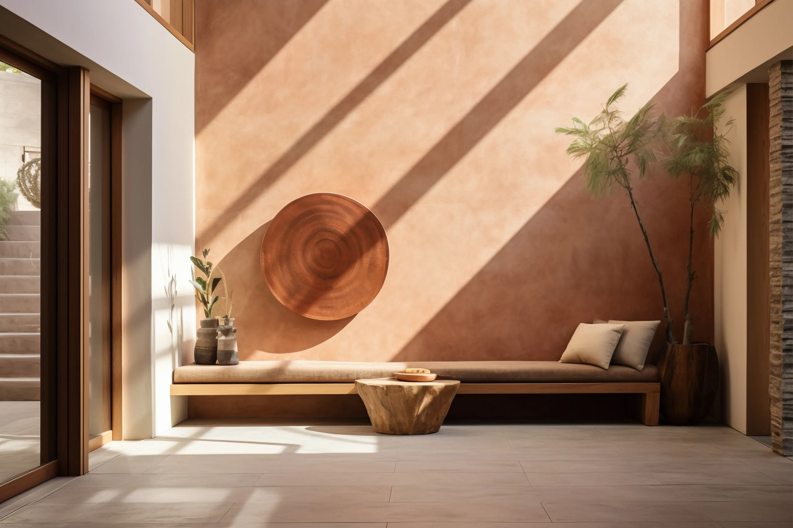
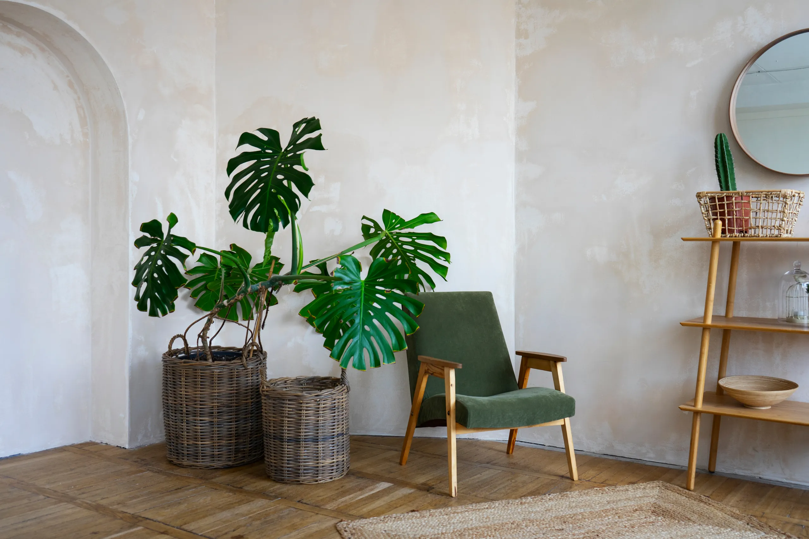
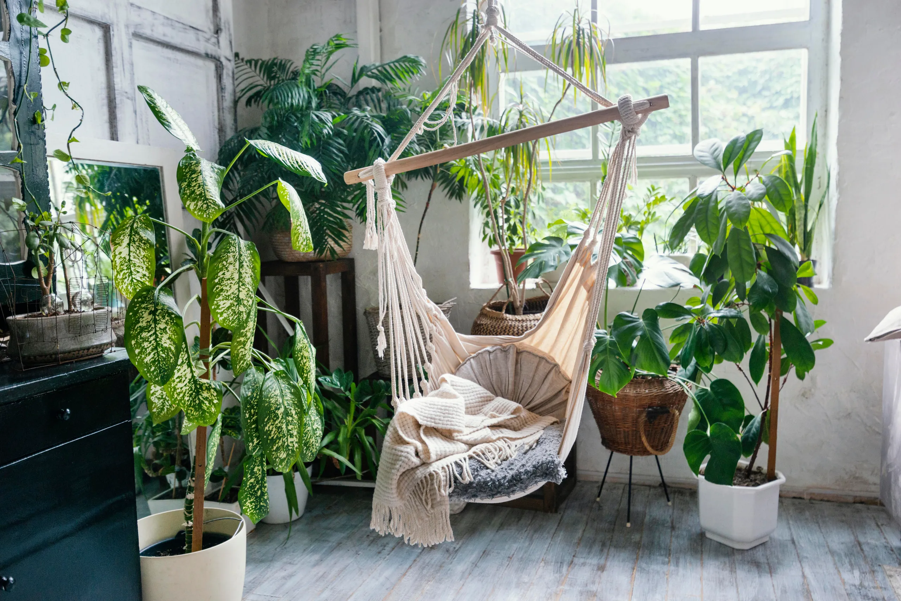
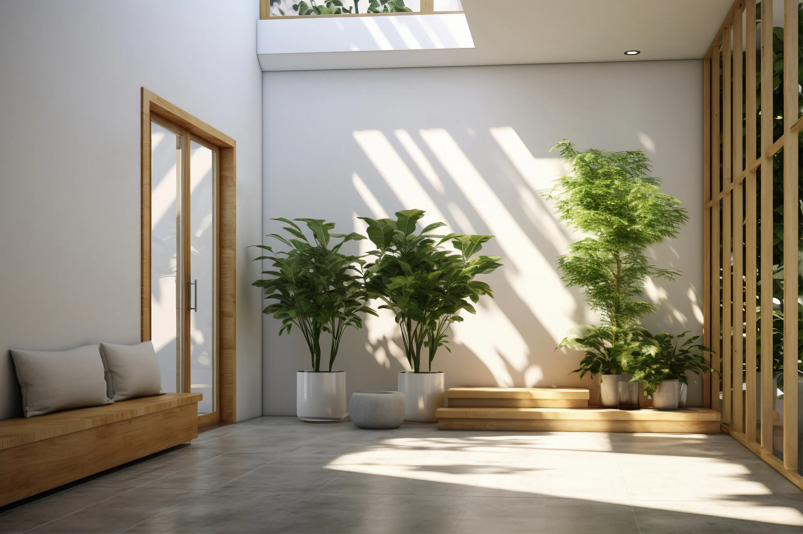
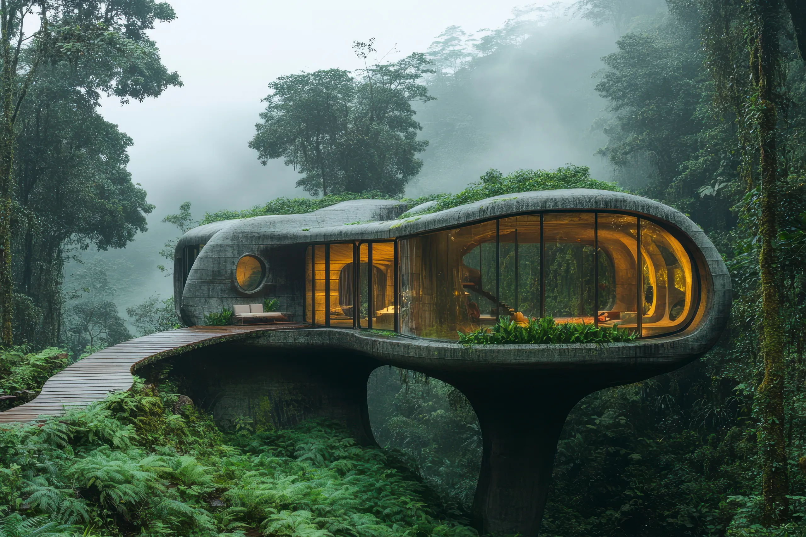

Where Nature Meets Design.
NIORA
Explore Our Work

Architecture Beyond Walls
Stone. Light. Air. Flow.

At Niora, we believe architecture is not about building over nature, but with it. Each project is a dialogue between human experience, natural materials, and timeless aesthetics.
At Niora, we believe architecture is not about building over nature, but with it.


Each project is a dialogue between human experience, natural materials, and timeless aesthetics.

Step inside our world of timeless spaces.
We believe spaces should not dominate nature but live with it. Our philosophy is rooted in dialogue — between stone and sky, light and shadow, human and earth.

Purity

Balance

Elegance
Modernism, Rooted in Nature

Built for life, designed for eternity.